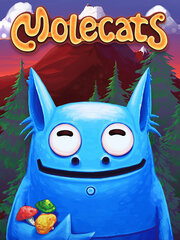

Molecats
Molecats
Detalles
|  | |
| Tiempo de juego | 3h 36m 0s |
| Última actividad | 27/08/2023 12:19:52 |
| Añadido | 30/08/2023 9:58:45 |
| Modificado | 30/08/2023 10:01:08 |
| Estado de finalización | Jugado |
| Librería | Steam |
| Fuente | Steam |
| Plataforma | PC (Windows) |
| Fecha de lanzamiento | 28/08/2018 |
| Puntuación de la Comunidad | 69 |
| Puntuación de la Crítica | 80 |
| Puntuación de usuario | |
| Género | Adventure Casual Indie |
| Desarrollador | Vidroid |
| Editor | Vidroid |
| Característica | Achievements Cloud Saves Full Controller Support Remote Play On TV Single Player Trading Cards |
| Enlaces | Punto de encuentro Discusiones Guías Noticias Página de la tienda PCGamingWiki Logros |
| Tag | 3D Adventure Atmospheric cartoon Casual cats Colorful Controller Cute Difficult family-friendly Funny indie logic Point & Click Puzzle Puzzle-Platformer Relaxing Singleplayer Visual Novel |
Descripción
Аn indirect-control tile-twisting puzzled adventure ...with traps!
Molecats is a challenging indirect-control puzzle game that takes place in the quirky and beautiful world of... Molecats!
Molecats are sort of cat-mole hybrids. They are a bunch of gawky fellows who like mushrooms, marching and adventures of all kind! Molecats spend their time digging into nearby caves and gathering delicious ‘shrooms and shiny relics, occasionally getting lost in the process.
Your goal is to guide Molecats through the underground by taking control of the environment and changing the path they follow. On their way, Molecats will face lots of dangerous traps, spooky monsters and tricky challenges and meet a whole bunch of strange but interesting characters.
Features:

Molecats is a challenging indirect-control puzzle game that takes place in the quirky and beautiful world of... Molecats!
Molecats are sort of cat-mole hybrids. They are a bunch of gawky fellows who like mushrooms, marching and adventures of all kind! Molecats spend their time digging into nearby caves and gathering delicious ‘shrooms and shiny relics, occasionally getting lost in the process.
Your goal is to guide Molecats through the underground by taking control of the environment and changing the path they follow. On their way, Molecats will face lots of dangerous traps, spooky monsters and tricky challenges and meet a whole bunch of strange but interesting characters.
Features:
- Indirect control via level tiles.. Rotate tiles to connect paths; apply special powers to tiles to make Molecats run, stop, or walk in opposite direction.
- Simple but challenging. Simple game mechanics at its base with little twists creating more challenging pathfinding puzzles.
- Peace! Traps and monsters don’t kill, but make your life way more complicated.
- “Nonfailure” gameplay style. You can’t actually lose this game, but if you mess up, you will end up facing even more puzzles.
- Tons of secrets! Each level features secondary goals, trophies, mysterious unlockables, special relic collections and hidden locations plus secret levels with unique game mechanics!